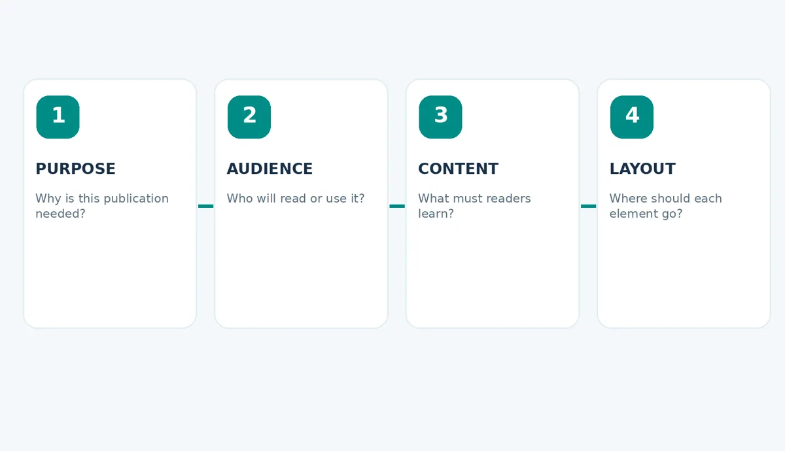
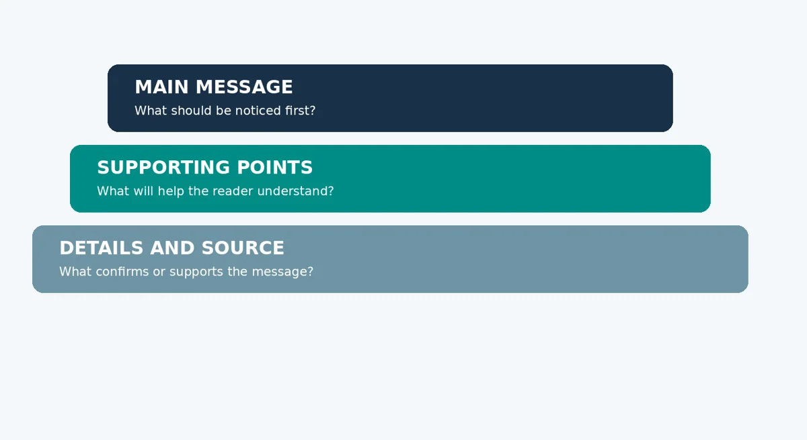
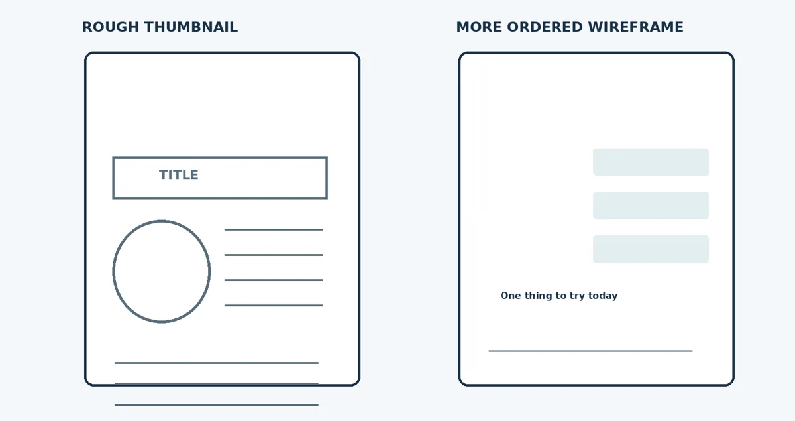
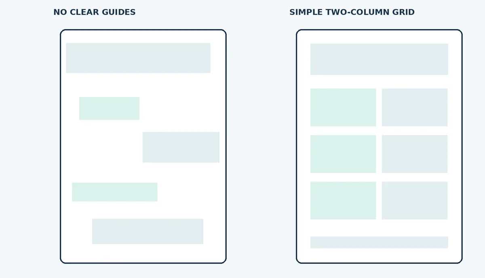
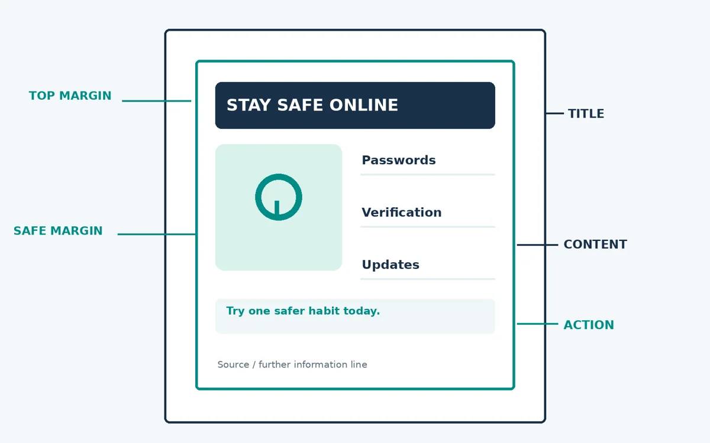

Planning and Organising a Publication
Plan the audience, content and visual structure before designing a publication.
Lecture notes
Before opening Photoshop, Illustrator or InDesign, a designer must decide what a publication is supposed to communicate. Planning helps ensure that the page serves its readers instead of becoming a collection of attractive but unrelated elements. In this lecture, you will prepare a short brief and an annotated A4 sketch that can guide your later computer-based work.
Learning outcomes
- Identify a publication’s purpose, audience and scope.
- Write a simple design brief and organise essential content into a logical outline.
- Draw a thumbnail or wireframe with clear margins, reading order and main content zones.
- Explain why simple alignment, hierarchy and feedback can improve a draft.
1. Why document planning matters
Desktop publishing involves decisions about information as well as appearance. If a designer starts with colours and decorations before deciding what readers need, the publication may look impressive but fail to explain its message. A short plan reduces unnecessary changes, helps select suitable graphics and gives a clear basis for reviewing the result.

Figure 1. Four connected planning decisions: purpose, audience, content and layout.
2. Identify the purpose of the document
The purpose is the result the publication should achieve. It might inform, teach, persuade, advertise or guide people through a procedure. The format is different: an A4 hand-out, poster or brochure describes what is being produced, but not why. A helpful purpose statement begins, “After reading this document, the audience should be able to…”
For example, “Create an A4 hand-out” is incomplete as a purpose. A more useful statement is: “Help new diploma students recognise three basic online safety habits and apply one of them today.” This tells the designer what information deserves priority.
3. Understand the audience
The target audience is the group of people expected to read and use the publication. Effective design considers their familiarity with the topic, likely language needs, reading environment and ability to act on the message. Beginners may need plain language and simple examples; experienced readers may be comfortable with more specialised terms.
Suppose two publications address account security. A hand-out for new students might explain “Use a different strong password for each important account”, while a technical checklist for IT staff may discuss password policies or authentication settings. Both concern security, but the appropriate wording and level of detail differ.
4. Define the scope
Scope establishes the boundaries of the publication. A one-page hand-out should not attempt to reproduce an entire textbook chapter. Select the information readers must know, include supporting detail only when useful and leave specialised or unrelated topics for additional reading.
For our fictional Tumaini Community Learning Centre exercise, the project is an A4 educational hand-out titled “Stay Safe Online”. Its audience is first-year students, and its goal is to explain three to five everyday safety practices. The hand-out does not need a full history of cybersecurity or detailed technical instructions.
5. Write a practical design brief
A design brief is a short record of the publication’s requirements. It should be understandable to another student or designer who has not attended your planning discussion. It normally states the document type, intended audience, purpose, essential content and expected form of delivery.
| Brief element | Example for Tumaini |
|---|---|
| Product | One-page A4 educational hand-out |
| Audience | First-year diploma students |
| Purpose | Encourage safer use of online accounts |
| Main content | Strong passwords, two-step verification and checking links |
| Delivery | Printable page and shareable PDF |
A brief should be specific enough to guide the work but short enough to use during drafting. It may change after the intended reader or client provides feedback.
6. Select and organise the content
Content planning begins by separating essential information from optional detail. Put the central message first, group closely related points together and finish with one clear action or conclusion. This creates information hierarchy: the relative importance and reading order of the content.

Figure 2. Information is easier to scan when the main message is given priority.
A simple content outline for the hand-out is: (1) headline, (2) one-sentence introduction, (3) three practical safety tips with brief explanations, (4) a short action such as enabling two-step verification on a suitable account, and (5) a credible source or further-reading line. Arrange this sequence before deciding the precise position of each paragraph.
7. Use a mind map when ideas are not yet organised
A mind map begins with a topic in the middle and connects it to possible subtopics. For “Stay Safe Online”, branches could include strong passwords, suspicious links, device updates and two-step verification. The mind map supports brainstorming; it does not determine the final page arrangement. Choose the strongest items from the map when producing an outline.
8. Sketching and wireframing a document
A thumbnail sketch is a small, rapid drawing showing possible positions of page elements. It may use only boxes, labels and lines. A wireframe is a more deliberate layout plan showing approximate spaces for the title, image, text groups, action line and footer. Neither requires finished illustrations or precise colours.

Figure 3. A rough thumbnail (left) becomes a clearer page wireframe (right).
Create several small thumbnails when possible, compare them and choose the clearest. You may draw a one-column structure with a strong headline, or a two-column design with an icon beside the main advice. The important question is whether a reader can find the message without searching.
9. Pages, margins and grids
A page margin is the space between the edge of the page and its main content. Margins help text avoid feeling crowded and reduce the chance of important material being cut off. As a classroom starting point, a simple A4 hand-out might use about 15–20 mm of main-content margin, with later adjustment for the layout and available printer.
A grid is a set of imagined or visible guides that helps the designer align text and images. A single-column grid is often enough for a short hand-out, while a two-column grid can separate a supporting image from brief explanations. A gutter is the space between adjacent columns.

Figure 4. A simple grid creates more consistent spacing and alignment.
Alignment makes elements appear connected by shared edges, while proximity places related information close together. Whitespace helps readers see separate content groups and notice the most important elements. These principles should already influence a sketch, even before the page is created in software.
10. Plan for delivery and obtain feedback
A publication intended for paper may require attention to page size, printer margins and legibility at normal reading distance. A document intended for digital delivery should remain readable when opened as a PDF. At this stage, record where the publication will be used; detailed printing settings will be addressed in later lectures.
Before producing the final publication, show your brief and sketch to another student. Ask what they notice first, which content is confusing and what action they think the hand-out recommends. Revise the plan based on the reader’s response, rather than changing colours simply because of personal preference.
11. Ongoing practice project

Figure 5. A labelled example showing the main content zones of an A4 hand-out.
Your task is to prepare one A4 “Stay Safe Online” hand-out for the fictional Tumaini Community Learning Centre. Today, complete the five-point brief, select three safety habits, write a concise outline and sketch the page. In later lectures, you will prepare a graphic, place text and images using desktop publishing software and export a final PDF.
12. Review questions
- Distinguish the purpose of a publication from its format, giving one example.
- Explain two ways the intended audience can influence text or visual design.
- List five items that belong in a simple design brief.
- What is the difference between a mind map, a thumbnail sketch and a wireframe?
- Explain how a margin, grid and information hierarchy can improve readability.
- Sketch a hand-out and indicate its title, main image, essential content and reader action.
Key terms
Purpose: the intended outcome of the publication. Audience: the people expected to read it. Scope: what the document will and will not cover. Design brief: a record of requirements. Content outline: an ordered list of material. Thumbnail: quick small sketch. Wireframe: planned arrangement of page elements. Margin: space near the page edge. Grid: organising guides. Hierarchy: relative emphasis and reading order.
Summary: Planning begins with a clear purpose and a particular audience. A short brief and content outline make the message manageable, while a thumbnail and simple grid help organise the page. Good planning is not separate from design: it is the foundation of an effective publication.
Simple practical activity
Plan an A4 hand-out
For a “Stay Safe Online” hand-out, write the intended audience, one-sentence purpose, four key ideas and draw a labelled A4 wireframe.
Read the full guided practical instructions
Scenario: The fictional Tumaini Community Learning Centre wants a one-page A4 educational hand-out titled “Stay Safe Online”. The hand-out is intended for first-year students. Your role is to prepare the document brief and layout plan before any software design begins.
Part A — Write a five-line design brief
1. Product and format:
________________________________________________________________________________
2. Target audience:
________________________________________________________________________________
3. Purpose — what should readers learn or do?
________________________________________________________________________________
4. Three essential content points:
________________________________________________________________________________
5. Delivery method (print, PDF or both):
________________________________________________________________________________
Part B — Choose a simple content order
Number the following elements from 1 (read first) to 5 (read last). Then explain why your order is useful.
| Order | Publication element |
|---|---|
| _____ | Main headline |
| _____ | Short explanation of the topic |
| _____ | Three practical safety tips |
| _____ | One reader action |
| _____ | Source or further reading |
My reason for this order: _____________________________________________________________________
___________________________________________________________________________________________
Part C — Draw your A4 wireframe
Draw a one-page layout in the rectangle below. Label the title, image or icon, tips, action line and source. Indicate a clear margin and show the intended reading order with arrows.
Part D — Review the plan with a partner
Which item did your partner notice first? ______________________________________________
One comment that will improve your sketch: ______________________________________________
What will you change before creating the document? ________________________________________
Part E — Short independent task
Observe one printed notice or hand-out at your college. In three sentences, identify its likely audience, main message and one way the layout could improve. Bring your observation to the next tutorial.
Review questions
Try explaining each answer in your own words before using the quiz.
- State the purpose and audience of a simple educational hand-out.
- Explain what a design brief and a wireframe contribute.
- Why should a publication be checked before final layout?